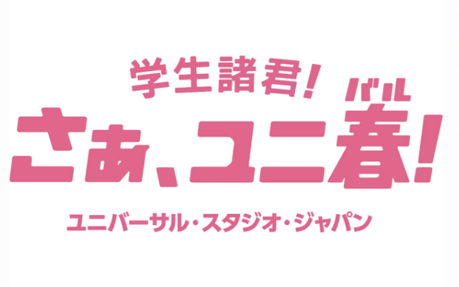
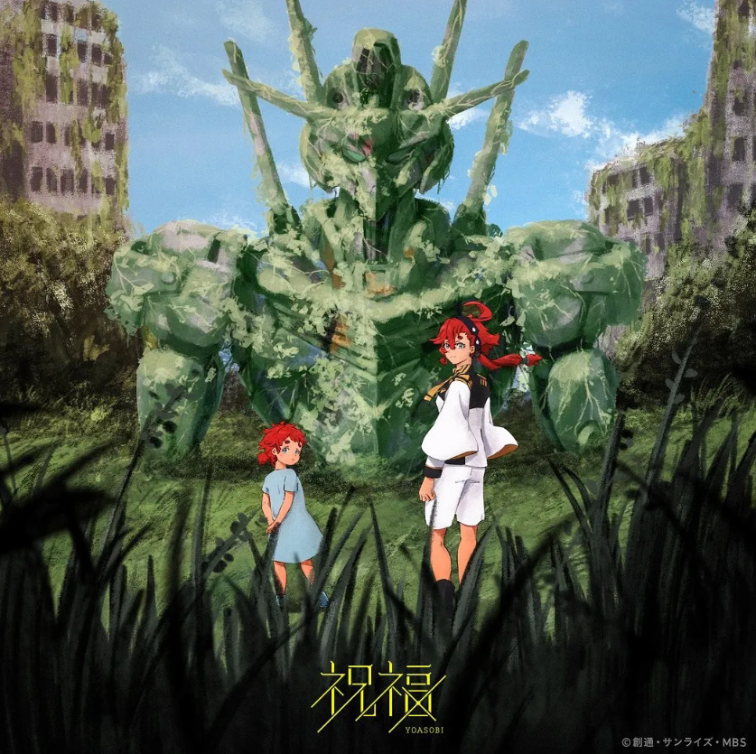

NEWS
2023.1.26
유니버설 스튜디오 재팬 공식 유튜브에 요아소비의 신곡 ‘어드벤처(アドベンチャー)'의 일부가 사용된 CM이 공개되었다. CM 이번 신곡은 작년 실시한
유니버설 스튜디오와의 콜라보 프로젝트인 학생응원 캠페인 ’유니봄‘ 의 테마송으로, 이전에 모집했던 원작을 바탕으로 제작되었다. CM 주제는 ‘잊을 수 없는 봄이 필요해’ 로,
어른이 되어도 마음 한 켠에 간직하고 있는 친구들과의 잊을 수 없는 유니버설 스튜디오에서의 소중한 봄의 추억이 깃든 마음을 표현한 곡이다.
2022.10.19

유니버셜 스튜디오 재팬과 콜라보레이션이 시작되었다. 테마는 '파크에서의 잊을 수 없는 추억'으로 학생응원 캠페인인 '유니봄(ユニ春)' 의 테마송이 되는
원작 에피소드를 모집한다.
2022.9.4

기동전사 건담 수성의 마녀 오프닝곡 '祝福(축복)'을 담당하는 것이 발표되었다. 원작은 작품의 시리즈 구성과 각본을 담당한 오코우치 이치로가 새로 쓴
단편 〈ゆりかごの星(요람의 별).